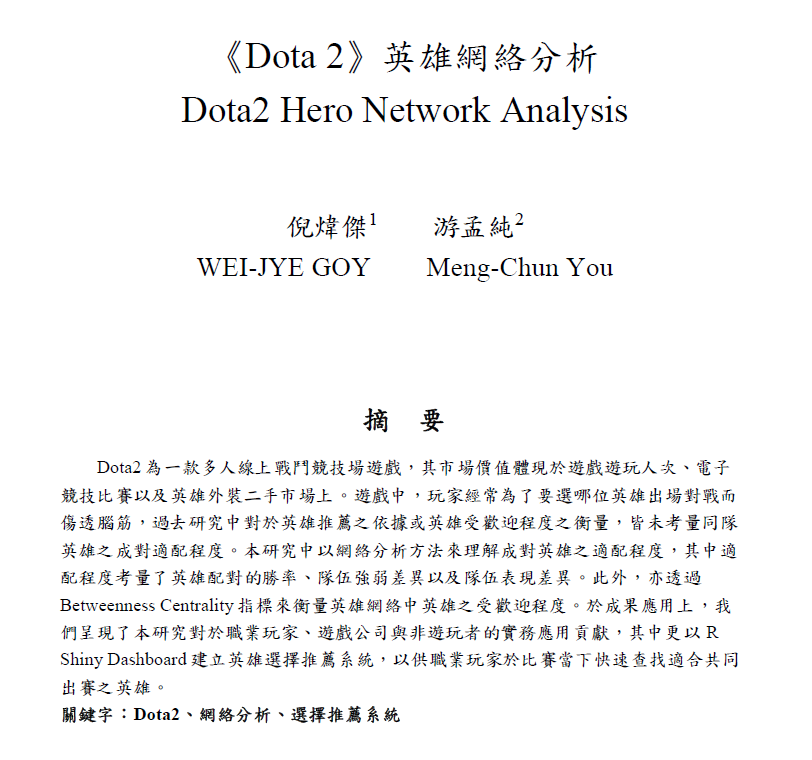

Wei-Jye GOY 倪煒傑
(886)905-757-720
weijyeg@gmail.com


Hello, I am a Malaysian currently residing in Taipei, Taiwan, and I hold a Master's degree of Science from National Taiwan University.
I have a strong interest in data analysis and algorithmic programming, with a passion for uncovering patterns underlying phenomena through data analysis.
My master’s thesis focused on sports trajectory data and simulation model, covering spatial data analysis, data visualization, machine learning, data mining and complex modeling.
Throughout my academic journey, I have gained significant teaching experience in subjects like spatial data analysis, programming, and data visualization.
I am eager to explore new domains, enjoy interacting with people, and engaging in collaborative projects. I look forward to utilizing my skills and contributing to future endeavors.
Experience
Graduate Teaching Assistant
National Taiwan University
September 2021 - June 2023
- Involves technologies such as GIS, spatial data analysis, programming, spatial simulation and
data visualization.
-
Design weekly lab assignments, midterm
and final exam questions on topics related to programming, simulation, spatial data processing, and visualization.
-
Utilize programming languages such as R and Python, as well as software like QGIS and ArcGIS Pro.
Lecturer
Ministry of Education (Research and Practical Curriculum PromotionCente)
December 2021 - December 2022
-
- Assisting high school students and teachers in the operation ofgeographic information system software.
-
Utilize software like QGIS and ArcGIS Pro.
Software Engineer Intern
Interactive Digital Technologies Inc.
July 2020 - September 2020
-
- Working on spatial data and GIS projects.
-
Developed websites using ASP.NET Web Apps.
-
EDUCATION
Master of Geography (MSc), College of Science
National Taiwan University
September 2021 - June 2023
-
- Thesis: "Spatial Analysis of Football Match: Using agent based model to explore the attacking patterns of football teams under
-
Receive the "Excellent Paper Award" for master's thesis at the 2023 Taiwan International Conference on Physical Activity and Exercise Science
-
Receive the " Outstanding Master Thesis Award" for master's thesis at the National Taiwan University Department of Geography
Bachelor of Geography, College of Science
National Taiwan University
September 2016 - June 2021
-
- The undergraduate research project involves using network analysis to analyze gaming data.
-
Skills
Programming Languages
-
R (R Shiny Dashboard, Machine Learning Package, Data Visualization)
-
Python
-
HTML / CSS / JavaScript
-
SQL
-
NetLogo
Software
-
- ArcGIS Desktop and Pro / QGIS / Leaflet
-
Tableau
-
Microsoft Office / Overleaf
-
Data Analysis
-
-
Spatial Statistics and Analysis
-
Spatial Modeling
-
Data Visualization and Cartography
-
SQL
-
Machine Learning
Portfolio

Undergraduate research project